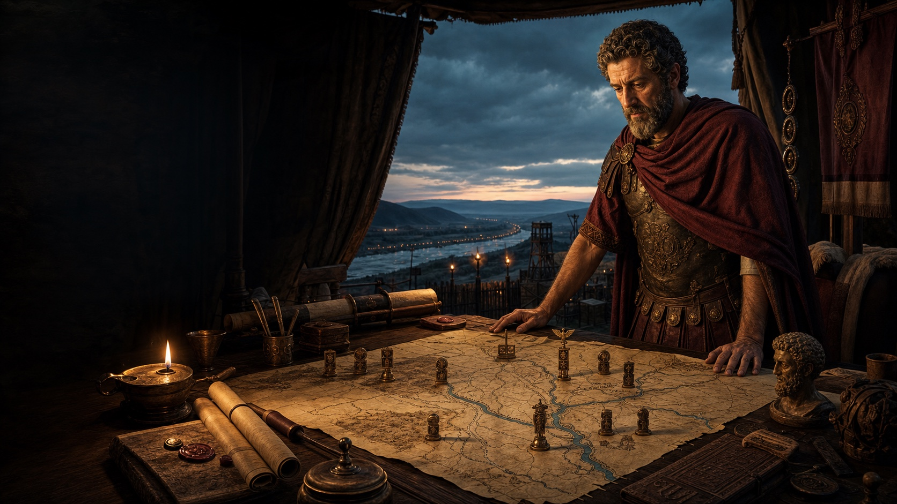

Marcus Aurelius · Northern command · 166-180 CE
Hold the frontier. Preserve the state. Endure yourself.
Move six Legions against four coalition armies. Every round one Crisis tells you which Army will act, but Rome and the Senate demand the same scarce attention.
“The impediment to action advances action.”

Volume IMarcus Aurelius · 166-180 CE